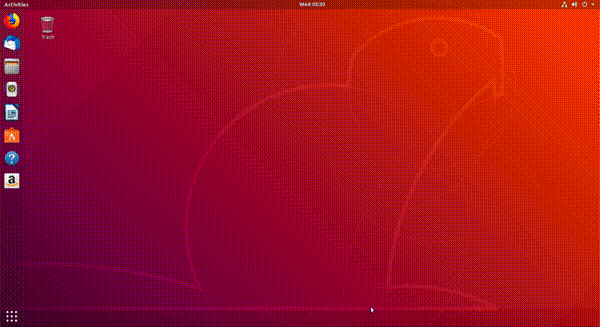
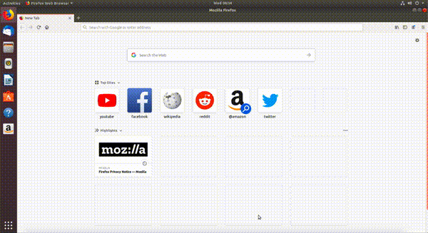
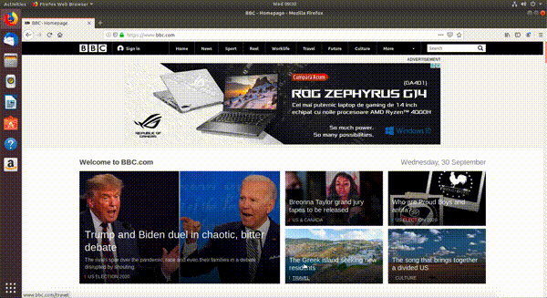
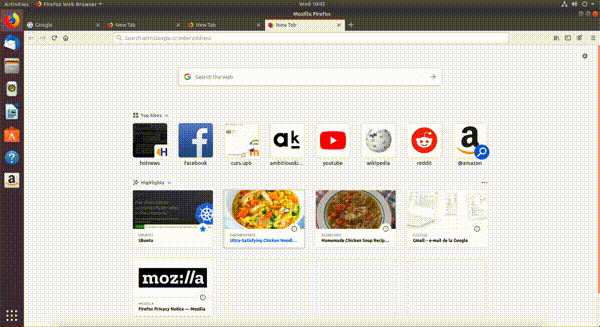
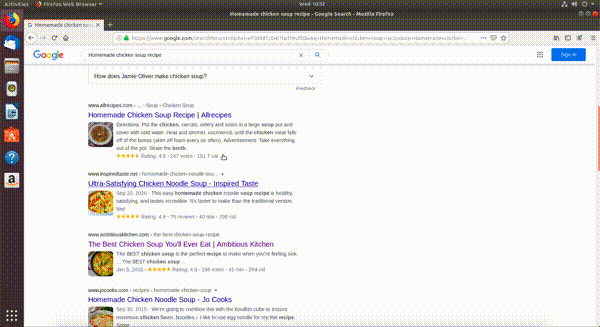
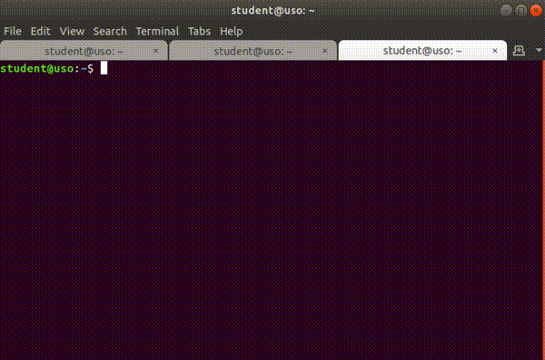

5. Cheatsheet¶
5.1. Shortcuturi pentru folosirea browserului web¶
5.1.1. Pornirea browserului web¶
Folosind iconuri, ca în imaginea de mai jos:
Folosind combinația de taste (scurtătura, shortcutul)
Alt+F2și introducând șirulfirefox, ca în imaginea de mai jos:
Folosind linia de comandă, ca în imaginea de mai jos:

5.1.2. Oprirea browserului web¶
Folosind butonul de închidere a ferestrei grafice, în forma unui simbol
x.Folosind intrarea de tip Quit din meniul grafic al aplicației, ca în imaginea de mai jos, specifică aplicației Firefox:

Folosind combinația de taste
Alt+F4care închide fereastra grafică, o scurtătură pentru folosirea butonului de închidere.Folosind combinația de taste
Ctrl+q, specifică aplicației Firefox.
5.1.3. Folosirea barei de adresă¶
Folosind clickuri, ca în imaginea de mai jos:
 Folosind combinația de taste
Ctrl+l.
5.1.4. Navigarea folosind butoane¶
Folosind butoanele săgeată stânga (Go back one page) și săgeată dreapta (Go forward one page) din interfața grafică a browserului, ca în imaginea de mai jos:

Folosind combinațiile de taste echivalente cu clickurile pe săgețile stânga/dreapta din browser: * Navigare înapoi:
Alt+săgeată stângasauCtrl+[. * Navigare înainte:Alt+săgeată dreaptasauCtrl+].
5.1.5. Scroll în browser¶
Folosind mouse-ul prin rotiță.
Folosind touchpadul.
Folosind tastele săgeată sus/săgeată jos. Așa ne deplasăm în sus/jos câte o linie.
Folosind butoanele
PageUpșiPageDownde pe tastatură. Așa ne deplasăm câte un “ecran” în jos sau în sus.
5.1.6. Reîmprospătarea paginii¶
Folosind butonul de remîprospătare (refresh) din browser, ca în imaginea de mai jos:
 Folosind tasta
F5.Folosind combinația de taste
Ctrl+r.
5.1.7. Deschiderea taburilor¶
Folosind butonul cu simbolul
+din interfața grafică a browserului, ca în imaginea de mai jos:
Folosind combinația de taste
Ctrl+t.
5.1.8. Navigarea printre taburi¶
Folosind clickuri, ca în imaginea de mai jos:

Folosind combinația de taste
Alt+<număr>.
5.1.9. Închiderea taburilor¶
Folosind butonul cu simbolul
xdin browser, ca în imaginea de mai jos: Folosind combinația de taste
Ctrl+w.Folosind combinația de taste
Ctrl+F4.
5.1.10. Deschiderea unui link în alt tab¶
Folosind clickuri. Folosim click dreapta pe link după care alegem opțiunea Open Link in New Tab din meniul contextual, ca în imaginea de mai jos:
 Apăsând tasta
Ctrlși click pe link.
5.2. Shortcuturi pentru folosirea terminalului¶
5.2.1. Deschiderea terminalului¶
Folosind iconuri, ca în imaginea de mai jos:

Folosind combinația de taste
Alt+F2, ca în imaginea de mai jos:
Apăsând click dreapta și apoi butonul Open Terminal, ca în imaginea de mai jos:

Folosind combinația de taste
Ctrl+Alt+t.
5.2.2. Închiderea terminalului¶
Folosind butonul
xdin partea dreaptă-sus a aplicației, ca în imaginea de mai jos:
Folosind combinația de taste
Ctrl+Shift+q.Folosind combinația de taste
Alt+F4.Folosind combinația de taste
Ctrl+d.
5.2.3. Deschiderea taburilor¶
Folosind meniul aplicației, ca în imaginea de mai jos:

Apăsăm pe opțiunea File din meniu, după care pe butonul New Tab.
Apăsând click dreapta în interiorul terminalului, după care pe butonul New Tab, ca în imaginea de mai jos:

Folosind combinația de taste
Ctrl+Shift+t.
5.2.4. Închiderea taburilor¶
Folosind meniul aplicației, ca în imaginea de mai jos:
Folosind butonul (simbolul)
xdin dreptul tabului, ca în imaginea de mai jos: Folosind combinația de taste
Ctrl+Shift+w.
5.2.5. Navigarea printre taburi¶
Folosind clickuri, ca în imaginea de mai jos:

Folosind combinația de taste
Alt+<număr>, unde număr este numărul (indexul) tabului la care vrem să ajungem. Primul tab are numărul 1, al nouălea tab are numărul 9, iar al zecelea are numărul 0.Folosind combinațiile de taste
Ctrl+PageUp, pentru a trece la următorul tab șiCtrl+PageDown, pentru a trece la tabul anterior.
5.2.6. Scroll în terminal¶
Folosind mouse-ul sau touchpad-ul.
Folosind combinațiile de taste
Shift+PageUpșiShift+PageDown.
5.2.7. Golirea ecranului de terminal¶
Folosind comanda
clearîn terminal, ca în imaginea de mai jos:
Folosind combinația de taste
Ctrl+lîn terminal.
5.2.8. Copierea textului¶
Selectăm textul, apăsăm click dreapta și apăsăm butonul Copy, ca în imaginea de mai jos:

Selectăm textul și apăsăm combinația de taste
Ctrl+Insert.Selectăm textul și apăsăm combinația de taste
Ctrl+Shift+c.
Warning
Pentru copierea textului din terminal folosim combinația de taste Ctrl+Shift+c și NU Ctrl+c.
În terminal, combinația de taste Ctrl+c are rolul de a opri o aplicație / un utilitar pornit.
5.2.9. Lipirea textului¶
Apăsăm click dreapta și apăsăm butonul Paste, ca în imaginea de mai jos:

Apăsăm combinația de taste
Shift+Insert.Apăsăm combinația de taste
Ctrl+Shift+v.
Warning
Pentru lipirea textului în terminal folosim combinația de taste Ctrl+Shift+v și NU Ctrl+v.